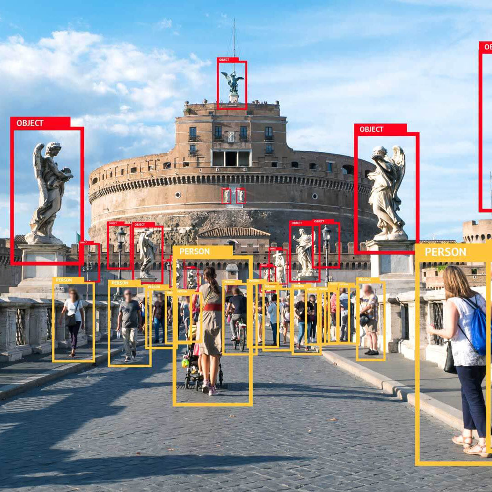
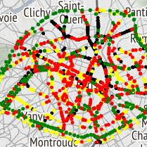

Applications
It seems the linear regrassion or coloring is beautiful and usful in science, but they do not
affect our life directly. However, it's not true, machine learning has affected our life any where.

Image Recognition
Image recognition is one of the most common applications of machine learning. It is used to identify objects, persons, places, digital images, etc. The popular use case of image recognition and face detection is, Automatic friend tagging suggestion:
Facebook provides us a feature of auto friend tagging suggestion. Whenever we upload a photo with our Facebook friends, then we automatically get a tagging suggestion with name, and the technology behind this is machine learning's face detection and recognition algorithm.
Speech Recognition
While using Google, we get an option of "Search by voice," it comes under speech recognition, and it's a popular application of machine learning.
Speech recognition is a process of converting voice instructions into text, and it is also known as "Speech to text", or "Computer speech recognition."
At present, machine learning algorithms are widely used by various applications of speech recognition. Google assistant, Siri, Cortana, and Alexa are using
speech recognition technology to follow the voice instructions.

Traffic prediction
If we want to visit a new place, we take help of Google Maps, which shows us the correct path with the shortest route and predicts the traffic conditions.
It predicts the traffic conditions such as whether traffic is cleared, slow-moving, or heavily congested with the help of two ways:
- Real Time location of the vehicle form Google Map app and sensors
- Average time has taken on past days at the same time.
Everyone who is using Google Map is helping this app to make it better. It takes information from the user and sends back to its database to improve the performance.
Product recommendations
Machine learning is widely used by various e-commerce and entertainment companies such as Amazon, Netflix, etc., for product recommendation to the user. Whenever we search for some product on Amazon, then we started getting an advertisement for the same product while internet surfing on the same browser and this is because of machine learning.
Google understands the user interest using various machine learning algorithms and suggests the product as per customer interest.
As similar, when we use Netflix, we find some recommendations for entertainment series, movies, etc., and this is also done with the help of machine learning.